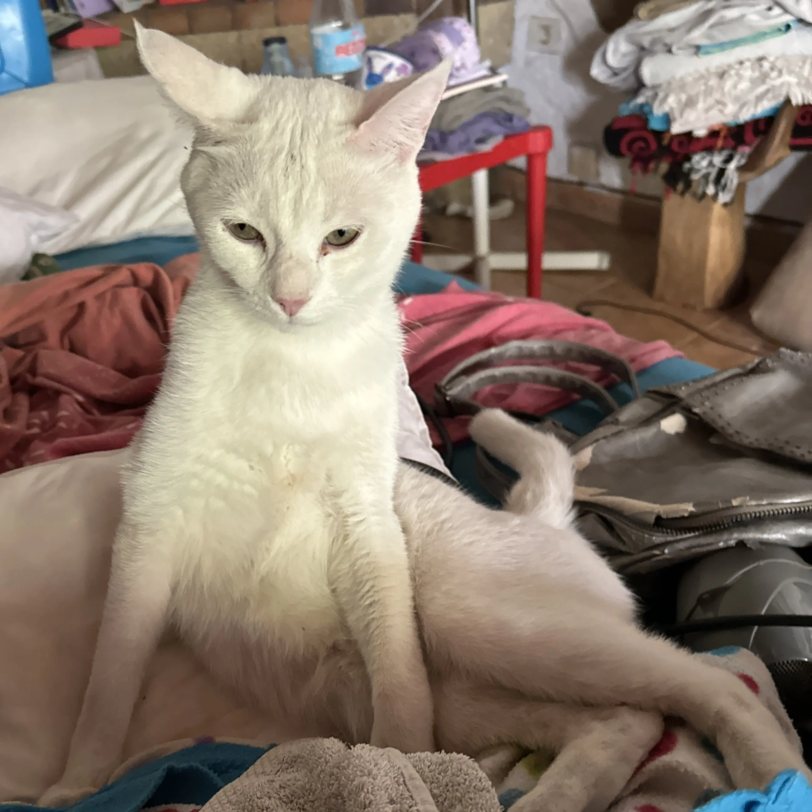

Nuestros servicios
🛡️ Auditoría de seguridad
Identificación de vulnerabilidades con herramientas profesionales como Metasploit, Nessus y Burp Suite.
- Análisis exhaustivo de sistemas
- Informe detallado de vulnerabilidades
- Recomendaciones personalizadas
🔒 Bastionado de sistemas
Refuerzo de infraestructuras críticas contra ataques externos.
- Configuración de firewalls avanzados
- Implementación de autenticación multifactor
- Monitoreo continuo de amenazas
Nuestros expertos
Diego Santana
Especialista en administración de sistemasCon más de 6 años de experiencia en administración de sistemas y desarrollo de aplicaciones web, Diego lidera la parte operativa de Virtucan.
Yeray Medina
Líder en auditorías de seguridadCertificado en CPTS y PNPT, Yeray cuenta con una amplia experiencia en auditorías de ciberseguridad y pentesting.
Soma Donoval
Especialista en ciberseguridad defensivaCon certificaciones OSCP y CISSP, Soma se encarga de la gestión de servidores y análisis forense.
Dante De Console
Asesor financiero y de RRHHCon experiencia en gestión de personal y asesoría financiera, Dante asegura que Virtucan opere de manera eficiente y sostenible.